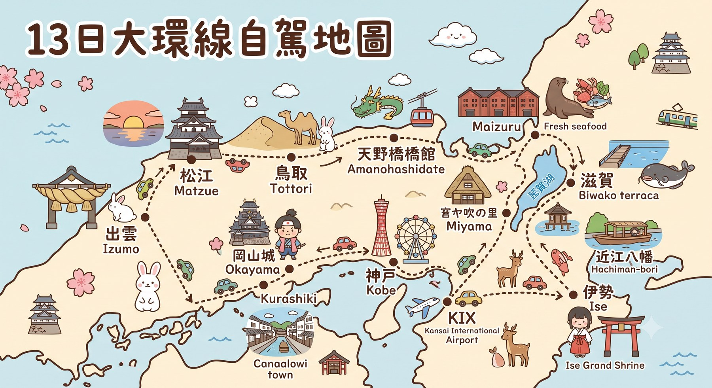

從伊勢神宮的晨光，穿越琵琶湖畔的慢時光，抵達出雲大社的神話海岸——一場屬於北極熊旅伴的十三日大環線自駕進香團。
點選任一站點，直接跳到當天的詳細行程。路線依日程順序由伊勢一路向西，抵達出雲後折返瀨戶內海側。

共 8 個住宿地點，涵蓋伊勢、琵琶湖、海之京都、山陰與瀨戶內海側，含訂房代碼與確認資訊。
航班、租車與每日移動路段，加上主要無障礙友善交通工具的票價資訊。
點開每個項目查看詳細資訊——伴手禮、參拜禮儀、無障礙資訊、停車提醒與緊急聯絡方式。